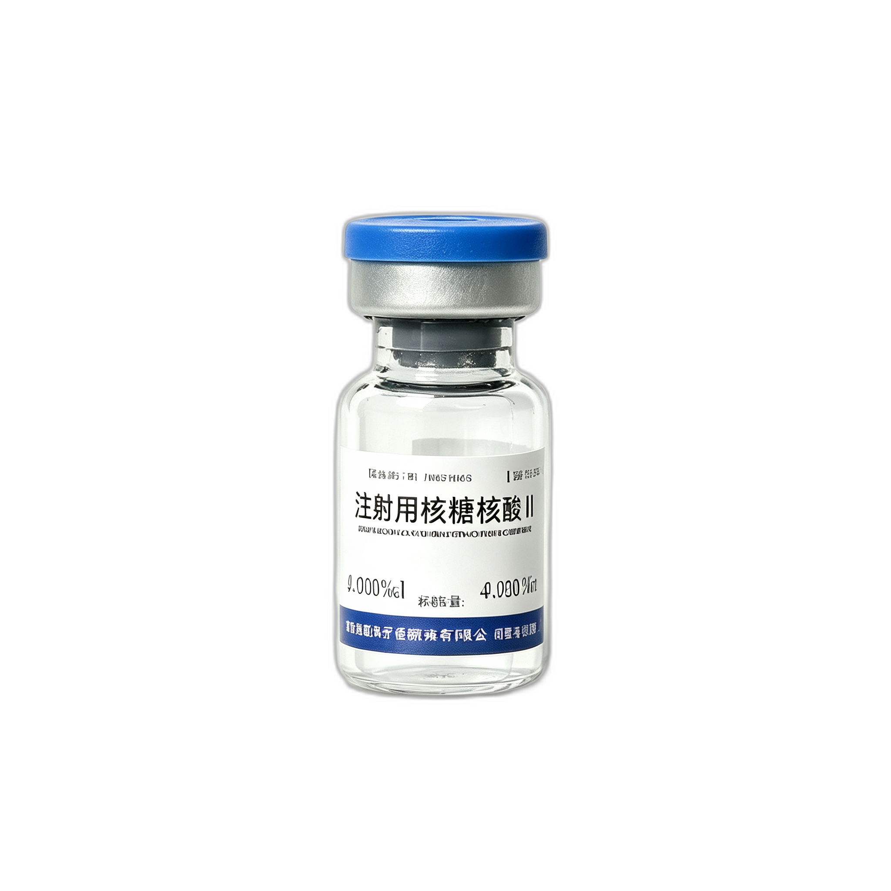

细胞免疫疗法 · 主动双向调节免疫力

本品具有提高机体细胞免疫功能和抑瘤作用。动物实验表明核糖核酸可明显抑制带瘤小鼠肿瘤的生长，使实体瘤体积缩小或消失，其抑瘤率为68.3%。病理组织学证实，本品能引起瘤细胞空泡样变性和液化性坏死，在其周围有大量增生纤维芽细胞、巨噬细胞和淋巴细胞，甚至以结缔组织代替瘤组织。
刺激免疫细胞，同时激活体液免疫和细胞免疫系统，实现主动双向调节。
促进T淋巴细胞分化、发育、成熟，增加T淋巴细胞数量，从根本上提升细胞免疫功能。
促进肝细胞增殖，有利于细胞修复；补充外源性核糖核酸增加ATP数量，改善造血功能；减轻肝纤维化，保护肝细胞。
疗效特点：①主要提升细胞免疫功能，更侧重于治疗；②不易产生耐受性，有利于长期应用；③起效稍慢于其他免疫制剂，但作用时间长（一疗程维持4-6个月）；④除免疫调节外，还有利于细胞修复，对身体无毒副作用。
以下研究数据来源于已发表的临床研究文献及真实世界研究报告，涵盖肿瘤、呼吸、消化、皮肤等多个治疗领域。
| 研究名称 | 研究类型 | 样本量 | 中心数 | 关键结论 | 发表期刊/年份 |
|---|---|---|---|---|---|
| 注射用核糖核酸II联合化疗治疗晚期NSCLC效果及安全性 | 多中心回顾性对照研究 | 2,111例 | 8家 | 观察组中位OS 18.51个月 vs 对照组15.65个月（P=0.001）；中位PFS 7.00个月 vs 5.49个月（P=0.003）。鳞状细胞癌患者死亡风险降低26.4%。安全性良好，未增加不良反应发生率。 | 肿瘤研究与临床 2021年 |
| 注射用核糖核酸II改善晚期胰腺癌化疗患者整体获益可能性的真实世界研究 | 真实世界回顾性研究 | 923例 | 10家 | 中位OS 7.5个月 vs 对照组6.7个月。无肝转移患者为潜在优势人群，生存获益趋势明显。不良事件发生率略低于对照组（88.7% vs 92.1%）。 | 现代肿瘤医学 2022年 |
| 研究名称 | 研究类型 | 样本量 | 关键结论 | 来源/年份 |
|---|---|---|---|---|
| BP素联合PF方案治疗中晚期恶性肿瘤 | 随机对照 | 90例 | BP素组白细胞下降程度显著低于对照组（P<0.05）；CD3、CD4、CD4/CD8、NK活性显著提高（P<0.05）；精神状态好转86% vs 34%，食欲体重增加57% vs 23%。 | 新乡医学院附属医院 2009年 |
| 核糖核酸II对晚期癌症的疗效观察 | 随机对照 | 40例 | 观察组总有效率73.0% vs 对照组30.0%（P<0.05）。生活质量总分88.41分 vs 76.62分（P<0.05），生理、社会家庭、功能维度均显著改善。 | 苏州大学附属常州肿瘤医院 2021年 |
| 核糖核酸II联合培美曲塞+铂类治疗NSCLC | 随机对照 | 80例 | 观察组ORR 45.00% vs 对照组22.50%，DCR 90.00% vs 60.00%（P<0.05）。肿瘤标志物CEA、CA125、CK-19均显著降低。CD3⁺、CD4⁺显著高于对照组。 | 吉林省肿瘤医院 2021年 |
| 核糖核酸II对老年晚期NSCLC生存期及免疫功能影响 | 随机对照 | 99例 | CD3⁺、CD4⁺、CD4⁺/CD8⁺显著提升（P<0.05）；咳嗽、发热、乏力、恶液质发生率低于对照组；无进展生存期（PFS）显著延长（P<0.05）。 | 石家庄市第一医院 2015年 |
| 注射用核糖核酸II对消化道肿瘤临床疗效观察 | 单盲随机对照 | 80例 | 化疗后CD3⁺、CD4⁺、CD56⁺阳性率显著高于对照组（P<0.05）；白细胞下降程度显著减轻；Karnofsky评分升高比例57.5% vs 42.5%。 | 中国实用医药 2014年 |
| 研究名称 | 研究类型 | 样本量 | 关键结论 | 来源/年份 |
|---|---|---|---|---|
| 施保利通联用核糖核酸II治疗老年肺炎 | 随机对照 | 76例 | 治疗组总有效率97.5% vs 对照组83.3%（P<0.05）；IL-8、CRP、PCT水平显著改善，疗程缩短。 | 昆明市儿童医院 2015年 |
| 非特异免疫核糖核酸治疗小儿支气管哮喘及反复下呼吸道感染 | 对照研究 | 48例 | 治疗组有效率91.7% vs 对照组47.2%；ERT（E-玫瑰花环试验）、LTT（淋巴细胞转化试验）、PHA皮试均显著提高。 | 中国医科大学 二、三医院 |
| 核糖核酸治疗慢性阻塞性肺病（COPD）临床观察 | 对照研究 | 69例 | IgG、IgM显著升高（P<0.001）；CD3⁺显著升高。证实核糖核酸对COPD患者免疫功能有明确改善作用。 | 煤炭总医院 2001年 |
| 免疫核糖核酸佐治肺结核45例疗效分析 | 对照研究 | 45例 | 病灶吸收率97.77% vs 对照组75%；痰菌阴转率78.3% vs 60%。2021年版《肺结核专家共识》将免疫治疗列为高级别证据强推荐。 | 苏州市第五人民医院 1998年 |
| 注射用核糖核酸II联合恩替卡韦治疗乙肝肝硬化 | 随机对照 | 60例 | 观察组总有效率93.33% vs 对照组73.33%（P<0.05）；HA（透明质酸）显著降低，抗肝纤维化效果明确。 | 2016年 |
| 注射用核糖核酸II联合贺普丁治疗乙型肝炎 | 随机对照 | 112例 | HBV-DNA阴转率53.57% vs 对照组8.93%（P<0.01）；ALT复常率89.29% vs 67.86%；不良反应低。 | 湛江中心人民医院 2015年 |
| 老年患者使用核糖核酸II的疗效观察 | 对照研究 | 50例 | IgG、IgA、IgM、CD3⁺、CD4⁺、CD8⁺均显著提高；呼吸道感染次数减少50%~67%；仅2例轻度头晕不良反应。 | 湖北医药学院附属人民医院 2013年 |
| 免疫核糖核酸和聚肌胞治疗扁平疣对比观察 | 对照研究 | 62例 | iRNA组有效率67.7% vs 对照组31.9%（P<0.01），证实对病毒性皮肤病有明确治疗效果。 | — |
| 研究名称 | 关键发现 | 来源/年份 |
|---|---|---|
| 注射用核糖核酸II抗肿瘤活性测定 | 对多种肿瘤细胞抑制率：K562（红白血病）83.6%、L929（成纤维细胞）85.7%、UMR-106（骨肉瘤）81.3%、H292（淋巴结肺癌转移）75.2%、SMMC-7721（肝癌）55.3%。对正常肝细胞抑制率为-33.8%（促进正常细胞增殖）。 | 中国医药工业杂志 2015年 |
| 注射用核糖核酸II上调p53诱导人白血病细胞凋亡 | 100-300mg/L处理K562和KG1a细胞后，呈时间剂量依赖性抑制增殖；上调p53、Bax和cleaved caspase-3，下调Bcl-2，通过线粒体凋亡通路诱导白血病细胞凋亡。 | 中国药理学通报 2016年 |
| 注射用核糖核酸II对人横纹肌肉瘤细胞增殖和凋亡的调控 | 激活p21，下调CDK2、CDK4，将RD细胞周期阻滞在S期；下调Akt、JNK磷酸化抑制增殖；通过Bcl-2/Bax通路破坏线粒体完整性诱导凋亡。 | 中国药理学通报 2018年 |
| 上调miR-320a增强核糖核酸II对肝癌Bel-7402细胞的作用 | 将细胞周期阻滞在G₀/G₁期；激活p53通路，破坏Bcl-2/Bax比例促进凋亡；抑制MMP-9表达，抑制肝癌细胞迁移和侵袭。miR-320a可增强肝癌细胞对药物的敏感性。 | 中国药理学通报 2017年 |
| 注射用免疫核糖核酸II的免疫调节及对顺铂的增效减毒作用 | 显著增强顺铂对肿瘤细胞的杀伤效果（增效作用），同时减轻顺铂所致的体重下降和免疫器官损伤（减毒作用），提升化疗耐受性。 | 中国医药生物技术 2016年 |
证据等级：涵盖2项多中心真实世界研究（累计3,034例）、10+项随机/对照临床研究，覆盖肿瘤、呼吸、感染、肝病、皮肤等多个领域。
核心结论：注射用核糖核酸II（BP素）可显著提升CD3⁺、CD4⁺等免疫指标，延长NSCLC患者中位OS（+2.86个月）和PFS（+1.51个月），降低化疗不良反应；在多种肿瘤细胞中抑制率达55%~86%，且对正常肝细胞无毒（促进增殖）；在肝炎、COPD、哮喘、结核等非肿瘤领域亦有多项研究证实其免疫调节和辅助治疗价值。
静脉注射优势：生物利用度100%，起效更快，适用于重症、癌症辅助治疗等需大剂量（100-300mg/日）的场景。
肌肉注射优势：操作简便，适合基层诊所常规治疗（50-100mg/日），患者依从性更好。两种给药方式均安全可靠。
以下方案来源于吉林敖东《疑难病诊疗方案本》（内部资料仅供专业人士参考），请遵医嘱使用。
| 疾病/适应症 | 用量 | 用法与频率 | 疗程 | 联合建议 |
|---|---|---|---|---|
| 免疫力低下 | 1支/次 | 每日1次，肌注或静滴 | 成人12支/疗程，小孩6支/疗程 | — |
| 各种癌症 | 2支/次 | 每日1次，静脉滴注 | 12次/疗程；晚期40支/2月，初期75支/4月 | 可联合化疗/中药方剂 |
| 肺结节 | 1支/次 | 每日1次，静滴或肌注 | 24支/疗程 | 小金丸/夏枯草胶囊/清肺散结丸等 |
| 乳腺结节 | 1支/次 | 每日1次，静滴或肌注 | 24支/疗程 | 乳癖散结胶囊/丹鹿胶囊/逍遥丸等 |
| 甲状腺结节 | 1支/次 | 每日1次，静滴或肌注 | 24支/疗程 | 小金丸/平消片/夏枯草胶囊等 |
| 带状疱疹 | 1支/次 | 每日1次，静滴或肌注；前3天可每日2支 | 12支/疗程 | 阿昔洛韦/伐昔洛韦等抗病毒药 |
| 慢性湿疹 | 1支/次 | 每日1次，静滴或肌注 | 12支/疗程 | 润燥止痒胶囊+外用糖皮质激素 |
| 慢性荨麻疹 | 1支/次 | A类：每日肌注1周→每周1次×12周 B类：常规对症 C类：每日肌注1周→每周2次×12周 | 分类治疗，约12周 | A类：西替利嗪+左旋咪唑；B类：清热解毒+抗生素；C类：谷维素+维生素B |
| 白癜风 | 1支/次 | 首月前2周：每日1次 首月后2周：隔日1次 次月：每周2次 | 30支/疗程 | 白灵片+白灵酊；梅花针/艾灸辅助 |
| 银屑病（牛皮癣） | 1支/次 | 首月前2周：每日1次 首月后2周：隔日1次 次月：每周2次 | 30支/疗程 | 阿维A+复方青黛胶囊+卡泊三醇软膏 |
| 急性呼吸道感染 | 1支/次 | 每日1次，静滴或肌注 | 3~6支 | 常规抗生素+对症治疗 |
| 手足口病/疱疹性咽峡炎 | 1支/次 | 每日1次，静滴或肌注 | 3~6支 | 退热药+干扰素α喷雾+小儿豉翘清热颗粒 |
| 慢性支气管炎 | 1支/次 | 每日1次，静滴或肌注 | 12支/疗程 | 止咳祛痰药+平喘药 |
| 慢性阻塞性肺疾病 | 1支/次 | 每日1次，静滴或肌注 | 12支/疗程 | 稳定期：百令胶囊/补肺活血胶囊；急性期：痰热清注射液 |
| 过敏性鼻炎 | 1支/次 | 每日1次，静滴或肌注 | 12支/疗程 | 鼻用皮质类固醇+口服H1抗组胺药；中成药：玉屏风颗粒/辛芩颗粒 |
| 哮喘 | 1支/次 | 每日1次，静滴或肌注 | 12支/疗程 | 吸入性糖皮质激素+福莫特罗；中成药：小青龙制剂/平喘益气颗粒 |
| 乙型肝炎 | 1支/次 | 每日1次，静滴或肌注 | 12支/疗程，2-3个疗程 | 核苷类似物（恩替卡韦/替诺福韦）+中药方剂 |
| 肝硬化/肝腹水 | 1支/次 | 每日1次，静滴或肌注 | 12支/疗程，2-3个疗程 | 扶正化瘀胶囊/复方鳖甲软肝片 |
| 类风湿性关节炎 | 1支/次 | 每日1次，静滴或肌注 | 12支/疗程，2个疗程 | 痹祺胶囊/益肾蠲痹丸/尪痹片等 |
| HPV感染 | 1支/次 | 前2周每日1次→后2周隔日1次→次月每周2次 | 30支/疗程 | 干扰素α2b喷雾/阴道泡腾胶囊；男女同治 |
| 反复妇科炎症 | 1支/次 | 每日1次，静滴或肌注 | 12支/疗程 | 常规抗感染+保妇康栓/治糜灵栓 |
| 肠系膜淋巴结肿大 | 1支/次 | 每日1次，静滴或肌注 | 6支/疗程 | 抗生素+四磨汤口服液/沙棘干乳剂 |
| 颈部淋巴结肿大 | 1支/次 | 每日1次，静滴或肌注 | 12支/疗程 | 标准抗生素+红花酒精外敷 |
| 结核 | 1支/次 | 隔日1次，静滴或肌注 | 12支/疗程，2个疗程 | 标准化疗方案（INH+RFP+PZA+EMB）+结核丸 |
| 外阴白斑 | 2ml/次 | 病变部位皮下或粘膜下注射，隔日1次 | 12支/疗程 | 保持外阴清洁干燥，忌辛辣 |
| 对比维度 | 注射用核糖核酸II | 免疫球蛋白 | 人胎盘组织液 | 人胎盘脂多糖 | 白介素-2 |
|---|---|---|---|---|---|
| 主要成分 | 核糖核酸 50mg | IgG抗体 | 胎盘组织水解混合物 | 脂多糖+核酸 40μg | 重组白介素-2 |
| 作用机理 | 激活体液+细胞免疫；促进T淋巴细胞增殖，根本提升免疫力 | 外源性抗体→仅激活体液免疫（单向） | 多糖激活免疫细胞→体液+细胞免疫 | 多糖激活免疫细胞→体液+细胞免疫 | 生长因子促进淋巴细胞增殖 |
| 免疫方向 | 双向调节 | 单向（仅体液） | 双向 | 双向 | 单向（仅细胞） |
| 持续时长 | 4-6个月 | 仅28天 | 短期 | 短期 | 短期 |
| 长期使用 | 可长期使用 | 不建议（致B细胞脱敏） | — | — | 不建议 |
| 适应症范围 | 免疫低下引起的各类疾病（说明书明确） | 重症感染急救 | 妇科、皮肤科慢性炎症 | 感冒、慢性支气管炎及哮喘 | 肾癌、恶性黑色素瘤等 |
| 给药方式 | 静脉注射 + 肌肉注射 | 静脉注射 | 仅肌肉注射 | 仅肌肉注射 | 静脉注射 |
| 储存条件 | 阴凉（≤20℃） | 2-8℃ | 2-8℃ 冷链 | 2-8℃ 冷链 | 2-8℃ 冷链 |
| 不良反应率 | 0.22%（偶见） | — | — | — | 常见发热、寒颤 |
胎盘类产品主要成分核酸含量极低，仅为本品的万分之一，且需冷链储存（2-8℃）。注射用核糖核酸II通过大剂量核糖核酸（50mg），不仅能激活免疫细胞，更能增加T淋巴细胞数量，从根本长效提升免疫力。适应症明确覆盖"免疫低下引起的各类疾病"，临床合规性更强。阴凉保存（≤20℃），无需冷链，使用更便捷安全。
以下指标为国内外临床免疫学通用的实验室检测标准，可用于客观评估机体免疫功能状态。数据参考《临床免疫学检验技术》（全国高等学校教材）及Manual of Molecular and Clinical Laboratory Immunology (ASM Press)。
| 检测类别 | 检测项目 | 正常参考范围 | 偏低/异常临床意义 |
|---|---|---|---|
| T淋巴细胞亚群 （流式细胞术） |
CD3⁺ 总T细胞 | 955~2,860 个/μL | T细胞总数不足，提示细胞免疫功能低下 |
| CD4⁺ 辅助T细胞 | 550~1,440 个/μL | 核心指标——低于200为严重免疫缺陷；提示易感染、肿瘤风险升高 | |
| CD8⁺ 细胞毒T细胞 | 320~1,250 个/μL | 抗病毒/抗肿瘤能力不足 | |
| CD4⁺/CD8⁺ 比值 | 1.0~2.0 | 低于0.8提示免疫失衡；HIV/AIDS患者常低于0.5 | |
| NK细胞（CD16⁺CD56⁺） | 150~1,100 个/μL | 天然免疫监视能力下降，抗肿瘤第一道防线减弱 | |
| 免疫球蛋白 （免疫比浊法） |
IgG | 7.0~16.0 g/L | 体液免疫主力——偏低致反复细菌感染 |
| IgA | 0.7~4.0 g/L | 黏膜免疫——偏低致呼吸道/消化道反复感染 | |
| IgM | 0.4~2.3 g/L | 早期免疫应答——偏低提示初次感染应答迟缓 | |
| IgE | ＜ 100 IU/mL | 与过敏/寄生虫感染相关；偏高提示过敏体质 | |
| 补体系统 | C3 | 0.9~1.8 g/L | 偏低见于系统性红斑狼疮、反复感染 |
| C4 | 0.1~0.4 g/L | 偏低提示补体消耗过多（免疫复合物病） | |
| 血常规 | 白细胞计数 (WBC) | 3.5~9.5 ×10⁹/L | 偏低提示骨髓抑制、病毒感染或免疫低下 |
| 淋巴细胞绝对值 | 1.1~3.2 ×10⁹/L | 低于1.0为淋巴细胞减少症，免疫功能显著下降 | |
| 中性粒细胞绝对值 | 1.8~6.3 ×10⁹/L | 偏低增加细菌感染风险 | |
| 炎症标志物 | C反应蛋白 (CRP) | ＜ 5 mg/L | 偏高提示体内存在炎症或组织损伤，免疫系统持续激活 |
使用说明：以上参考范围为成人通用标准，不同实验室因检测方法及试剂差异可能存在细微偏差。CD4⁺ T细胞计数和CD4⁺/CD8⁺比值是国际公认的免疫状态核心评价指标。建议将自评问卷结果与上述实验室指标结合，由临床医生综合评估后制定个体化免疫调节方案。
90%的疾病均与机体免疫力相关，免疫力是人体最好的武器。注射用核糖核酸II适用于免疫机能低下引起的各种疾病。
与山东大学新药评价中心合作，完成急性毒性试验、长期毒性试验及制剂安全性试验。结果证明：无明显毒性作用，无溶血和致凝集作用，无致敏作用，无刺激性。病理学检查未见明显药物特异性改变。
与吉林省药品再评价协会合作，开展3013例不良反应重点监测。仅7例一般不良反应（头晕、心悸、皮疹、恶心等），发生率0.22%（偶见），安全性较高，风险可控。
不良反应发生率0.22%，显著低于常用抗生素左氧氟沙星的1.92%，安全性优势明显。工艺先进可靠，药品纯度远超《中国药典》规定的90%。
本品为处方药，请在医师指导下使用。对本品过敏者禁用。配伍禁忌：甲磺酸培氟沙星、乙胺碘呋酮、丁二磺酸腺苷蛋氨酸、葡萄糖酸依诺沙星。阴凉（20℃以下）保存。